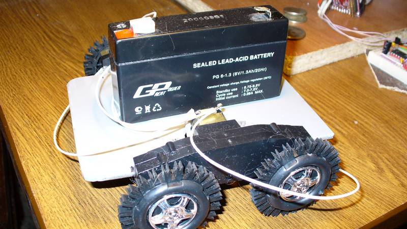
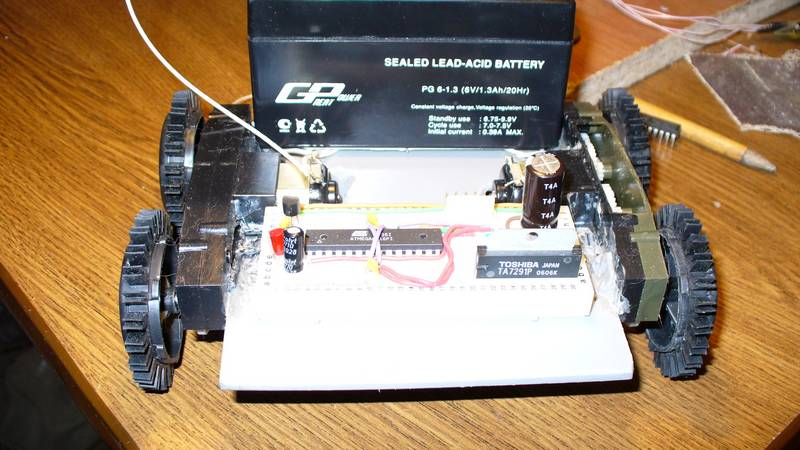

Каждый начинающий роботостроитель сталкивается с проблемой изготовления колёсной базы для своего робота. Где взять редукторы. Как рулить? Какие применить моторы? Один из возможных вариантов ответа на эти вопросы представлен здесь. Эту отличную идею я нашёл на робофоруме.
Вид сбоку:

Вид спереди:

Моторчиками упрвляет Драйвер коллекторного двигателя.
Вот небольшое видео: